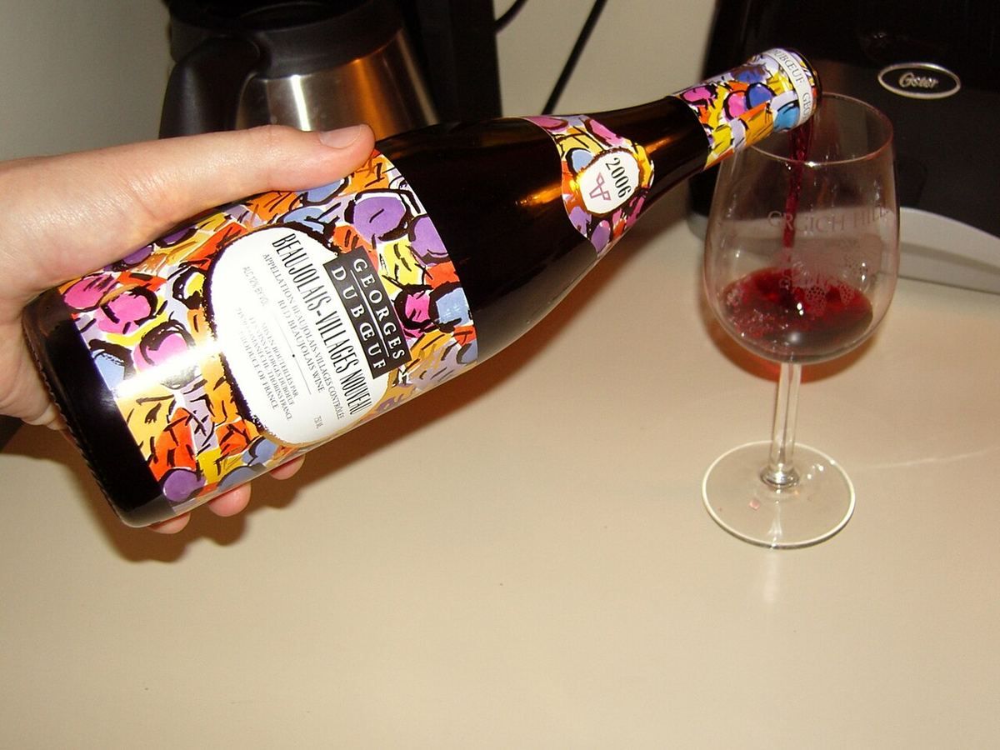

BLANC
Le Beaujolais, entre le Mâconnais et Lyon, est le pays du gamay. Ses vins vont du beaujolais nouveau, commercialisé quelques semaines après les vendanges, aux dix crus du nord, sur sols granitiques.

Le Beaujolais doit son nom à Beaujeu, ancienne capitale des sires de la région. Son vin approvisionna pendant des siècles la ville voisine de Lyon, son débouché naturel. Le gamay, banni en 1395 des meilleures vignes de Bourgogne par le duc Philippe le Hardi, trouva sur ces collines une terre où il devint le cépage dominant. Au XXe siècle, le phénomène du beaujolais nouveau, un vin jeune commercialisé quelques semaines après les vendanges, valut à la région une grande notoriété internationale ; depuis 1985, il est mis en vente le troisième jeudi de novembre. Au cours des dernières décennies, de nombreux producteurs ont mis l'accent sur les crus et sur des vins plus structurés.
La région s'étend au sud du Mâconnais, principalement dans le département du Rhône, le long des versants orientaux des monts du Beaujolais, qui la protègent des vents d'ouest. Le climat est semi-continental, avec une légère influence méditerranéenne remontant la vallée de la Saône. Bien qu'il partage une organisation historique avec la Bourgogne et y soit souvent rattaché, le Beaujolais possède sa propre identité et sa propre interprofession.
La division géologique est nette. Le nord repose sur des granites, souvent décomposés en une arène granitique appelée localement gore, ainsi que sur des schistes et d'autres roches cristallines ; c'est là que se trouvent les crus et l'essentiel du Beaujolais-Villages. Le sud, le pays des Pierres Dorées, présente des sols argilo-calcaires et sédimentaires et produit surtout du beaujolais.
Il existe trois niveaux : Beaujolais, Beaujolais-Villages et dix crus commercialisés sous leur propre nom, souvent sans mention du Beaujolais sur l'étiquette : Saint-Amour, Juliénas, Chénas, Moulin-à-Vent, Fleurie, Chiroubles, Morgon, Régnié, Brouilly et Côte de Brouilly. Fleurie et Chiroubles sont généralement associés à des vins aromatiques et légers ; Moulin-à-Vent et Morgon à des vins plus structurés et aptes à la garde ; la Côte de Brouilly occupe les pentes du mont Brouilly, formé d'une roche volcanique ancienne.
Le gamay, à la peau violacée et au jus blanc, est presque le seul cépage rouge. Une technique très répandue est la macération semi-carbonique : les grappes entières sont placées en cuve et une partie de la fermentation se déroule à l'intérieur des baies intactes, ce qui donne des vins fruités, à la couleur vive et aux tanins souples. Beaucoup de producteurs des crus emploient aussi des méthodes plus traditionnelles, avec éraflage et élevage plus long. On produit également de petites quantités de beaujolais blanc, issu de chardonnay, et de rosé.


